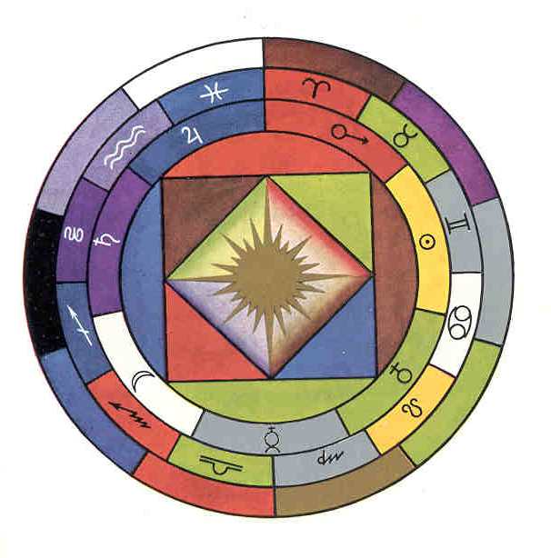

Back to Franz Bardon Research
True Colors of the 3rd Tarot Card diagram
The colors of the 3rd Tarot Card diagram in the new Merkur edition of "The Key to the true Quabbala" are wrong, probably due to a scanning error.Therefore I will put here a scan of this diagram which I took from the first edition of KTQ (Bauer-Edition). Only this first Bauer edition contains the true, hand-painted diagram made by a Czech artist guided by Franz Bardon. All other editions contain only distorted colors and are therefore corrupt.
Please notice, that the colors on a computer screen depend from the quality of your hardware.


This page hosted by  Get your own Free Home Page
Get your own Free Home Page